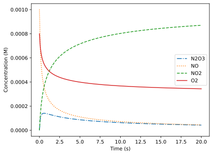

Chapter 18: ChemPy#
The ChemPy library provides a collection of tools useful for general, physical, analytical, and inorganic chemistry. Examples include balancing chemical reactions, stoichiometric calculations, solving complex equilibria, and decomposing reducible symmetry representations. This package does not come with Anaconda installations and is not automatically included in Colab, so you will need to install it using either pip or conda. See the most recent package instructions for further details.
For this chapter, we will also be using NumPy, SymPy, and matplotlib to support our calculations.
import numpy as np
import sympy
import matplotlib.pyplot as plt
18.1 Formulas, Stoichiometry, and Equilibria#
18.1.1 Chemical Formulas#
Before we move into solving more complex problems, we first need to introduce a foundational object in ChemPy, which is the Substance. The Substance holds information about a chemical species including the chemical composition, mass, charge, etc. The Substance object holds information about the chemical substance that is always true. There is also a subclass called a Species, which inherits attributes from the Substance class but also allows phase information used in kinetics and equilibrium calculations. Both are imported as shown below.
from chempy import Substance, Species
The most basic way to create a Substance is using Substance(), which accepts a number of parameters including those in Table 1. These are keyword arguments, but the name is frequently just supplied as the first positional argument.
Table 1 Substance() Parameters
Parameter |
Type |
Description |
|---|---|---|
|
|
Name of substance |
|
|
Elemental composition |
|
|
Overall net charge |
|
|
Dictionary with user-defined keys |
In the example below, we create an ammonia Substance. No parameters are required when a Substance is created, but including some attributes is helpful for later calculations. Below, we will include the elemental composition of ammonia using a dictionary with the element’s atomic number as the keys. For example, ammonia has one nitrogen atom (AN = 7) and three hydrogen atoms (AN = 1).
NH3 = Substance('NH3', composition={7: 1, 1: 3})
Alternatively, you can create a Substance object using the from_formula constructor. This function parses a string molecular formula and uses it to populate the name and composition of the Substance.
sulf = Substance.from_formula('Na2SO4')
sulf.name
'Na2SO4'
sulf.composition
{11: 2, 16: 1, 8: 4}
sulf.charge
0
The charge default is 0 unless a charge is included in the formula. Note that the charge needs to be written with the sign first. That is, +2, not 2+.
nitrate = Substance.from_formula('NO3-')
nitrate.charge
-1
copper = Substance.from_formula('Cu+2')
copper.charge
2
Once a Substance has been created, we can use it to obtain the molecular mass with mass.
sulf.mass
142.03553856000002
Additional information can be included in the data attribute using a dictionary with user-defined keys. Below, we include the boiling point (\(^\circ\)C) and density (g/mL) of benzene.
benzene = Substance('C6H6', data={'bp': 80, 'density': 0.88})
benzene.data
{'bp': 80, 'density': 0.88}
Throughout the rest of this chapter, we will see examples of using the Substance objects to solve various chemical problems.
18.1.2 Stoichiometry#
ChemPy includes the ability to balance chemical reactions using the balance_stoichiometry() function. This function accepts two lists, sets, or tuples - the first holds reactants names and the second holds product names. The function returns two ordered dictionaries (OrderedDict), which for our purposes operate like regular Python dictionaries. The keys are the chemical species names and the values are the stoichiometric coefficients for the balanced reaction.
from chempy import balance_stoichiometry
Below, we will balance the reaction between copper metal and nitric acid (unbalanced shown below).
r, p = balance_stoichiometry(['Cu', 'HNO3'], ['Cu(NO3)2', 'NO', 'H2O'])
r
OrderedDict([('Cu', 3), ('HNO3', 8)])
p
OrderedDict([('Cu(NO3)2', 3), ('NO', 2), ('H2O', 4)])
From the resulting ordered dictionaries, we find that the balanced reaction is as shown below.
18.1.3 Calculating Theoretical Yields#
The ChemPy library does not include an explicit function to calculate the limiting reactant or theoretical yield, but a short Python script can be written to leverage the above functionality. As our example, we will use the oxidation of nitrogen monoxide to nitrogen dioxide NO(g) + O\(_2\)(g) \(\rightarrow\) NO\(_2\)(g), which is currently unbalanced.
To carry out this calculation, we will use the following equations where \(\xi\)(xi) is the extent of reaction, \(n_i\) is the initial moles of a chemical species, \(n_f\) is the final moles of a chemical species, and \(\nu\) is the coefficient of that species in the balanced reaction with positive for products and negative for reactants. The extent of reaction is how many moles a chemical speices changes in the reaction divided or normalized by the stoichiometric coefficient. ChemPy will contribute to our calculations by balancing the chemical reaction and calculating the molecular weight from the formulas.
First, the mass of each chemical species is provided in a list of two dictionaries, reactants first then products.
grams = [{'NO': 3.01, 'O2': 2.83}, {'NO2': 0.0}]
Next, we will have ChemPy balance the reaction. To automate as much as possible, the following list comprehensions extract the reactants and products from the dictionaries above. It is assumed that the user included all chemical species, even those with zero starting mass.
react, prod = balance_stoichiometry([key for key in grams[0].keys()],
[key for key in grams[1].keys()])
Next, we convert the mass of each species to the moles, leveraging ChemPy’s ability to calculate molecular masses. We also calculate the extent of reaction, \(\xi\)(xi), by dividing all moles of reactants by their stoichiometric coefficients and finding the smallest value, which corresponds to the limiting reactant.
mol_r = {spec: g / Substance.from_formula(spec).mass for spec, g in grams[0].items()}
xi = min(mol_r[spec] / react[spec] for spec in react.keys())
Finally, we calculate the final mass and moles of products and reactants using the equation shown above. This results in two dictionaries containing the names of the species with the masses of each at the end of the reaction.
prod = {spec: grams[1][spec] + xi * mol * Substance.from_formula(spec).mass
for spec, mol in prod.items()}
react = {spec: grams[0][spec] - xi * mol * Substance.from_formula(spec).mass
for spec, mol in react.items()}
prod
{'NO2': 4.61491201759648}
react
{'NO': 0, 'O2': 1.22508798240352}
We can also package this into a single Python function which accepts the starting grams of reactant and product in dictionaries.
def calc_grams(grams_r, grams_p):
"""Calculates final grams of products and reactants.
Parameters
----------
grams_r : dict
Dictionary with reactant names (str) as keys and starting grams of
reactants (float) as values.
grams_p : dict
Dictionary with product names (str) as keys and starting grams of
product (float) as values.
Returns
-------
react : dict
Dictionary with reactant names (str) as keys and final grams of
reactants (float) as values.
prod : dict
Dictionary with product names (str) as keys and final grams of
product (float) as values.
Note
----
All masses must be included in grams_r and grams_p, including those with
0.00 g.
"""
react, prod = balance_stoichiometry([key for key in grams_r.keys()],
[key for key in grams_p.keys()])
mol_r = {spec: g / Substance.from_formula(spec).mass for spec, g in grams_r.items()}
xi = min(mol_r[spec] / react[spec] for spec in react.keys())
prod = {spec: grams_p[spec] + xi * mol * Substance.from_formula(spec).mass
for spec, mol in prod.items()}
react = {spec: grams_r[spec] - xi * mol * Substance.from_formula(spec).mass
for spec, mol in react.items()}
return react, prod
Below we use this function to calculate the theoretical yields for the combustion of glucose and reduction of titanium(IV).
calc_grams({'C6H12O6': 25, 'O2': 40}, {'CO2': 0.00, 'H2O': 0.00})
({'C6H12O6': 0, 'O2': 13.3580896556318},
{'CO2': 36.6424099114101, 'H2O': 14.9995004329581})
calc_grams({'TiCl4': 1000, 'Mg': 200}, {'Ti': 0.00, 'MgCl2': 0.00})
({'TiCl4': 219.637934581362, 'Mg': 0},
{'Ti': 196.943015840362, 'MgCl2': 783.419049578276})
18.2 Kinetic Simulations#
ChemPy can also simulate chemical kinetics by integrating ordinary differential equations. While this topic has been covered in section 9.1.4, the advantage of ChemPy is that it builds the differential equations for the user. This means the user only needs to provide the reactions and rate constants as strings along with providing the initial concentrations and times at which to simulate the concentrations. As an example, we will simulate the following hypothetical reactions with rate constants.
We will first need to import the ReactionSystem() and get_odesys() functions.
from chempy import ReactionSystem
from chempy.kinetics.ode import get_odesys
We then need to create the reaction system. There are multiple ways of doing this, but the simplest is to provide the reactions and rate constants as strings using the from_string() method. The reaction is written as a string with the reactants and products separated by a -> arrow, and the rate constant is separated from the products with a semicolon (;). We also need to make a list or array of times at which to calculate the concentrations during the course of the chemical reaction (times). Finally, we need to create a dictionary with all of the starting concentrations (C0).
react_sys = ReactionSystem.from_string("""2 NO + O2 -> 2 NO2; 2.1e6
NO + NO2 -> N2O3; 4.7e9
N2O3 -> NO + NO2; 4.3e6""")
times = np.linspace(0, 20, 200)
C0 = {'NO': 1.0e-3, 'O2': 8.0e-4, 'NO2': 0.0, 'N2O3': 0.0}
The reaction system is fed into the get_odesys() function. Finally, the integrate() method is applied to the odesys to perform the actual integration. The integrate() function requires the times (times) and initial concentrations (C0).
odesys, _ = get_odesys(react_sys)
results = odesys.integrate(times, C0)
The integration results can be accessed with the following attributes. The concentrations (yout) are in the same order as the names (names).
Table 2 Integration Results Attributes
Attribute |
Type |
Description |
|---|---|---|
|
tuple of |
Name of substance |
|
|
Times integrated (same as |
|
|
Concentrations over course of reaction |
results.names
('N2O3', 'NO', 'NO2', 'O2')
plt.plot(results.xout, results.yout[:, 0], linestyle='dashdot', label=results.names[0])
plt.plot(results.xout, results.yout[:, 1], linestyle='dotted', label=results.names[1])
plt.plot(results.xout, results.yout[:, 2], linestyle='dashed', label=results.names[2])
plt.plot(results.xout, results.yout[:, 3], linestyle='solid', label=results.names[3])
plt.xlabel('Time (s)')
plt.ylabel('Concentration (M)')
plt.legend();

As you simulate longer mechanisms, you will likely find yourself creating an initial concentration dictionary with a large number of 0.00 values since everything except reactants has zero concentration. To make this task easier, use the Python defaultdict object, which is essentially a Python dictionary that returns a default value for anything not defined in the dictionary. For floats, the default is 0.0, for integers, it is 0, and for strings, it is '' (i.e., empty string). To use the defaultdict object, import it from the collections module and then give the defaultdict(type, dict) a default object type and a dictionary with the values you do want to define.
In our above example, the C0 dictionary can be replaced by the one below.
from collections import defaultdict
C0 = defaultdict(float, {'NO': 1.0e-3, 'O2': 8.0e-4})
C0['NO']
0.001
C0['NO2']
0.0
18.3 Solving Equilibria#
Solving for equilibrium concentrations is a tedious, multistep calculation if performed by hand and can involve solving polynomials or making approximations. Solving for equilibrium concentrations of tandem equilibria is even more challenging. ChemPy provides tools for solving these problems, including complex, tandem equilibria. We must first perform the following imports.
from chempy import Equilibrium
from chempy.equilibria import EqSystem
The Equilibrium object defines a single equilibrium with the reactants, products, stoichiometry, and equilibrium constant. The chemical species are provided as the keys in dictionaries with the coefficients as the dictionary values. As usual, the reactant dictionary comes before the product dictionary. Finally, the equilibrium constant is included as the third positional argument.
Equilibrium(react_dict, prod_dict, Keq)
The EqSystem object holds one or more Equilibrium objects as a list or tuple followed by all chemical species in the form of a Substance object.
Below, we demonstrate this with the decomposition of ammonia to nitrogen and hydrogen gas.
We first define each chemical species as a Substance. Be sure to include the name since this will be used by ChemPy to connect each Substance with the species in various dictionaries. Next, the Equilibrium object is created. The equilibrium system (EqSystem) is created by providing all equilibria as a list or tuple followed by all Substance objects as a list or tuple. Even if there is only one equilibrium, it still needs to be packaged in a list or tuple.
If you are working to solve an equilibrium where you don’t know the formulas of the species or want to use names other than their molecular formula, you will need to turn off the check for mass balance. This is accomplished by adding dont_check={'balance'} as the last argument of EqSystem().
NH3 = Substance.from_formula('NH3')
N2 = Substance.from_formula('N2')
H2 = Substance.from_formula('H2')
eq = Equilibrium({'NH3': 2}, {'N2': 1, 'H2': 3}, 3.44)
eqsys = EqSystem([eq], [NH3, N2, H2])
To solve the equilibrium, we use the root() method, which requires the initial concentrations of all species as a dictionary. Be sure the names of all chemical species match those in your Substance objects above since this is how ChemPy knows they are the same chemical species.
There are three outputs from this calculation listed below. The first one is really what most people are interested in while the latter two are more for troubleshooting or checking that everything worked as intended.
x- The equilibrium concentrations of all species in the order provided to theEqSystem()functionsol- Output from thescipy.optimize.rootsolversane- This is a boolean that indicates if the result is reasonable (i.e., non-negative concentrations and mass balance is observed)
C0 = {'NH3': 0.6, 'N2': 0.0, 'H2': 0.6}
x, sol, sane = eqsys.root(C0)
x
array([0.25998632, 0.17000684, 1.11002052])
sane
True
As a more complex example, we will solve the following iron/thiocyanate tandem equilibrium where \(K_1\) = 890 and \(K_2\) = 2.6.
Fe = Substance.from_formula('Fe+3')
SCN = Substance.from_formula('SCN-')
FeSCN = Substance.from_formula('Fe(SCN)+2')
FeSCN2 = Substance.from_formula('Fe(SCN)2+1')
eq_1 = Equilibrium({'Fe+3': 1, 'SCN-': 1}, {'Fe(SCN)+2': 1}, 890)
eq_2 = Equilibrium({'Fe(SCN)+2': 1, 'SCN-': 1}, {'Fe(SCN)2+1': 1}, 2.6)
eqsys = EqSystem([eq_1, eq_2], [Fe, SCN, FeSCN, FeSCN2])
C0 = defaultdict(float, {'Fe+3': 1.0 , 'SCN-': 2.0})
x, sol, sane = eqsys.root(C0)
x
array([0.00111811, 0.45811688, 0.45588066, 0.54300123])
We can test that the solution is valid in terms of the equilibrium values by calculating the reaction quotient for each equilibrium, and we find that they match both equilibrium constants.
x[2] / (x[0] * x[1])
np.float64(889.9999999999998)
x[3] / (x[2] * x[1])
np.float64(2.6)
For a valid solution, we also need mass to be conserved, which is tested automatically by ChemPy.
sane
True
18.4 Molecular Symmetry#
Molecular symmetry is important to chemistry in a variety of applications including bonding, chirality, electronic transitions, and chemical spectroscopy to name a few. While chemists frequently apply symmetry on a qualitative level, group theory can be used as a more rigorous, quantitative treatment of the subject. The application of group theory to chemistry is a very powerful tool, but it often involves an onerous amount of matrix math (i.e., linear algebra) when done by hand. These are the kinds of calculations that computers are well suited for. The chempy.symmetry module includes tools specifically to carry out these types of calculations such as decomposing (i.e., reducing) reducible representations, predicting IR- and Raman-active vibrational modes, generating reducible representations for all motions, and generating symmetry-adapted linear combinations (SALCs) of atomic orbitals among others. In this section, we will examine a few of these features for removing some of the tedium from group theory calculations.
The chempy.symmetry module has two submodules, representations and salcs. The representations module works with reducible and irreducible representations and vibrational predictions while the salcs module predicts SALCs by either the projection operator method or using the symmetry functions in character tables. We will address both here.
18.4.1 Symmetry Representations#
The first module in the chempy.symmetry module is representations, which interconverts reducible and irreducible representations, generates reducible representations, and predicts vibrational modes as a result of these representations.
import chempy.symmetry.representations as reps
The main object in the representations module is a reducible representation created using the Reducible() function. This requires the values (gamma) provided as a list, tuple, or array followed by the point group name (group) as a string. The all_motion= keyword argument is set to True if the reducible representation is for all motions (i.e., rotation, vibration, and translation) and False if it represents only vibrations. The default is False.
The following example is all motions of water with the molecule on the xz-plane. The most important attribute here is gamma, which returns the \(\Gamma\) values.
reduc = reps.Reducible([9, -1, 3, 1], 'c2v', all_motion=True)
reduc.gamma
[9, -1, 3, 1]
Use the decomp() method to decompose or reduce the reducible representation. The number of each irreducible representation for that point group is returned in the order listed in the character table.
reduc.decomp()
array([3, 1, 3, 2])
If you don’t have a character table available, you can use the print_table() function to view character table.
reps.print_table('c2v')
╭─────┬───┬────┬────┬─────╮
│ C2v │ E │ C₂ │ σv │ σvʹ │
├─────┼───┼────┼────┼─────┤
│ A1 │ 1 │ 1 │ 1 │ 1 │
├─────┼───┼────┼────┼─────┤
│ A2 │ 1 │ 1 │ -1 │ -1 │
├─────┼───┼────┼────┼─────┤
│ B1 │ 1 │ -1 │ 1 │ -1 │
├─────┼───┼────┼────┼─────┤
│ B2 │ 1 │ -1 │ -1 │ 1 │
╰─────┴───┴────┴────┴─────╯
Alternatively, if the decomp() parameter to_dict is set to True, the number of each irreducible representation is returned as a dictionary, which is often more interpretable than the default NumPy array.
reduc.decomp(to_dict=True)
{'A1': 3, 'A2': 1, 'B1': 3, 'B2': 2}
To predict the IR- and Raman-active modes, use the ir_active() and raman_active() methods, which also accept the optional to_dict= argument.
reduc.ir_active(to_dict=True)
{'A1': 2, 'A2': 0, 'B1': 1, 'B2': 0}
reduc.raman_active(to_dict=True)
{'A1': 2, 'A2': 0, 'B1': 1, 'B2': 0}
Likewise, the vibrational modes can be predicted using the vibe_modes() function. In this water example, all vibrational modes happen to be both IR- and Raman-active.
reduc.vibe_modes(to_dict=True)
{'A1': 2, 'A2': 0, 'B1': 1, 'B2': 0}
18.4.2 Reducible Representations for All Motions#
The generation of a reducible representation for all motions is already a tedious and challenging task for molecules that lie nicely on the Cartesian axes and have rotational operations that are all multiples of 90\(^\circ\), such as the D\(_{4h}\) molecule XeF\(_4\). This problem is even more challenging when dealing with a molecule such as the C\(_{3v}\) molecule PH\(_3\) since this problem now involves off-axis operations that require trigonometric calculations. The Reducible object includes the from_atoms() constructor that performs this math for the user based on the number of atoms that remain stationary during each symmetry operation.
Note
If you’re curious about the details of this calculation, each atom’s contribution, \(R\), is calculated by the following equation where \(x\) is +1 for E and proper rotations and -1 for all other operations while \(n\) and \(k\) are the order and exponential of the N\(^k_n\) symmetry operation, respectively. For example, C\(_4\) is \(x\) = 1, \(n\) = 4, and \(k\) = 1. The number of stationary atoms is multiplied by the per atom contribution.
As an example, we will use the C\(_{4v}\) molecule XeOF\(_4\). We first need to know which operations are part of this point group and their order. For this, use the print_header() function that accepts the point group name as a string and prints out the symmetry operations found along the top row of a character table.
reps.print_header('c4v')
E 2C₄ C₂ 2σv 2σd
For this point group, we have E, C\(_4\), C\(_2\), \(\sigma_v\), and \(\sigma_d\). Below are the numbers of atoms in the XeOF\(_4\) that do not move for each of these operations. You are encouraged to work through this yourself to ensure this makes sense. Remember that \(\sigma_v\) runs through the outer atoms while \(\sigma_d\) runs between them.
C\(_{4v}\) |
E |
2 C\(_4\) |
C\(_2\) |
2 \(\sigma_v\) |
2 \(\sigma_d\) |
|---|---|---|---|---|---|
6 |
2 |
2 |
4 |
2 |
By feeding these values as a list or array into the from_atoms() method along with the point group, we get the reducible representation for all motions.
XeOF4 = reps.Reducible.from_atoms([6, 2, 2, 4, 2], 'c4v')
XeOF4.gamma
array([18, 2, -2, 4, 2])
With this reducible representation, we can then determine the number of vibrational, IR-active, and Raman-active modes.
XeOF4.vibe_modes(to_dict=True)
{'A1': 3, 'A2': 0, 'B1': 2, 'B2': 1, 'E': 3}
XeOF4.ir_active(to_dict=True)
{'A1': 3, 'A2': 0, 'B1': 0, 'B2': 0, 'E': 3}
XeOF4.raman_active(to_dict=True)
{'A1': 3, 'A2': 0, 'B1': 2, 'B2': 1, 'E': 3}
18.4.3 Symmetry-Adapted Linear Combinations#
The chempy.symmetry.salcs submodule predicts symmetry-adapted linear combinations (SALCs) by either the projection operator method or using the symmetry functions on the right side of character tables. Both of these functions require that the user assign SymPy variables to outer atoms, orbitals, or ligands; so SymPy needs to also be imported. This was done at the start of this chapter.
import chempy.symmetry.salcs as salcs
As an example, we will look at the hydrogen s-orbitals of a trigonal planar molecule such as BH\(_3\) or a CH\(_3\) carbocation. For the projection operator method, we need to assign variables to each hydrogen s-orbital, and these variables can be whatever you want. For simplicity, we will use \(a\), \(b\), and \(c\) here. We then need to track the movement of only one of the s-orbitals with each symmetry operation. In this case, we track \(a\), which projects as follows.
D\(_{3h}\) |
E |
C\(_3\) |
C\(_3\) |
C\(_2\) |
C\(_2\) |
C\(_2\) |
\(\sigma_h\) |
S\(_3\) |
S\(_3\) |
\(\sigma_v\) |
\(\sigma_v\) |
\(\sigma_v\) |
|---|---|---|---|---|---|---|---|---|---|---|---|---|
a |
b |
c |
a |
b |
c |
a |
b |
c |
a |
b |
c |
reps.print_header('d3h')
E 2C₃ 3C₂ σh 2S₃ 3σv
The projections are provided to the calc_salcs_projection() function as the first positional argument as a list of SymPy variables. The function requires the point group as a string and accepts the to_dict optional argument. The output below is a dictionary showing the SALCs for each irreducible representation.
a, b, c = sympy.symbols('a b c')
salcs.calc_salcs_projection([a, b, c, a, b, c, a, b, c, a, b, c], 'd3h', to_dict=True)
{"A'1": a + b + c, "A'2": 0, "E'": a - b/2 - c/2, 'A"1': 0, 'A"2': 0, 'E"': 0}
The result is an A’\(_1\) SALC that has equal contribution from all three s-orbitals and a SALC with E’ symmetry where the \(a\) orbital contributes twice the magnitude and opposite sign from the \(b\) and \(c\) orbitals. Even though E’ is a doubly degenerate representation, the projection of a only yields one of the SALCs. This is a known limitation of the projection operator method.
An alternative approach to calculating SALCs is to use the symmetry functions in character tables. This can be performed with pen and paper by assuming all outer atoms are a unit distance from the central atom and plugging their \(xyz\) coordinates into the functions on the right side of the character table. The calc_salcs_func() function carries out much of this calculation for the user.
For example, to calculate the s-orbital ligand SALCs of a square-planar complex, if we imagine the four bonds on the \(x\)- and \(y\)-axes, the \(xyz\) coordinates would be (0, 1, 0), (1, 0, 0), (0, -1, 0), and (-1, 0, 0). Because we are providing the \(xyz\) coordinates, the mode='vector'. The result is four SALCs, and both doubly degenerate E\(_u\) SALCs are returned here.
a, b, c, d = sympy.symbols('a b c d')
lig = [[0, 1, 0], [1, 0, 0], [0, -1, 0], [-1, 0, 0]]
salcs.calc_salcs_func(lig, 'd4h', [a, b, c, d], mode='vector', to_dict=True)
{'A1g': a + b + c + d,
'A2g': 0,
'B1g': a - b + c - d,
'B2g': 0,
'Eg': 0,
'A1u': 0,
'A2u': 0,
'B1u': 0,
'B2u': 0,
'Eu': [b - d, a - c]}
Determining the \(xyz\) coordinates for molecules with angles that are not 90\(^\circ\) is more challenging and can require trigonometry. To make these a little easier, the calc_salcs_func() function can also be set to mode='angle' and provided the spherical coordinate angles instead of \(xyz\) coordinates. That is, identify the location of the ligand using the azimuthal and polar angles where the azimuthal is the angle from the positive x-axis on the xy plane and polar angle is the angle from the positive z-axis. As an example, we will again determine the SALCs for hydrogen s-orbitals in a trigonal-planar molecule. The azimuthal angles are 0\(^\circ\), 120\(^\circ\), and 240\(^\circ\), while the polar angles are 90\(^\circ\) for all three of them.
lig = [[0, 90], [120, 90], [240, 90]] # polar angles (azimuthal, polar)
salcs.calc_salcs_func(lig, 'd3h', [a, b, c], mode='angle', to_dict=True)
{"A'1": a + b + c,
"A'2": 0,
"E'": [a - 0.5*b - 0.5*c, b - c, a - 0.5*b - 0.5*c, b - c],
'A"1': 0,
'A"2': 0,
'E"': 0}
The result above provides both the A’\(_1\) SALC and the two degenerate E’ SALCs. One minor issue with this method is that we sometimes get the same SALC listed multiple times. It is also worth noting that negative angles work fine in this calculation as demonstrated below.
lig = [[0, -90], [120, -90], [240, -90]] # polar angles (azimuthal, polar)
salcs.calc_salcs_func(lig, 'd3h', [a, b, c], mode='angle', to_dict=True)
{"A'1": a + b + c,
"A'2": 0,
"E'": [a - 0.5*b - 0.5*c, b - c, a - 0.5*b - 0.5*c, b - c],
'A"1': 0,
'A"2': 0,
'E"': 0}
Further Reading#
Dahlgren, B. ChemPy: A Package Useful for Chemistry Written in Python. Journal of Open Source Software 2018, 3 (24), 565. https://doi.org/10.21105/joss.00565.
Paper describing the ChemPy library and its features.
ChemPy GitHub Page. bjodah/chempy
ChemPy GitHub page with examples and Jupyter notebooks.
Exercises#
Complete the following exercises in a Jupyter notebook using ChemPy. You are encouraged to also use other libraries such as SymPy and NumPy to support your solutions.
Calculate the mass of melatonin, which has a formula C\(_{13}\)H\(_{16}\)N\(_2\)O\(_2\).
Balance the following reactions.
a. Fe + O\(_2\) \(\rightarrow\) Fe\(_2\)O\(_3\)
b. KClO\(_3\) \(\rightarrow\) KCl + O\(_2\)
c. C\(_6\)H\(_6\) + O\(_2\) \(\rightarrow\) CO\(_2\) + H\(_2\)O
Determine the equilibrium concentrations for the following equilibrium given that we start with 1.0 M of A with K\(_1\)=0.8 and K\(_2\)=1.9. Be sure to add
dont_check={'balance'}as the last argument toEqSystem()so that it doesn’t mandate atom balance.
Simulate the concentration versus time kinetics for the following reaction with k\(_1\) = 1.2\(\times\)10\(^{-3}\) M\(^{-1}\)s\(^{-1}\) and k\(_{-1}\) = 3.3\(\times\)10\(^{-3}\) M\(^{-1}\)s\(^{-1}\). Assume all chemical species remain soluble during the reaction.
Reduce the following reducible representations.
a. \(\Gamma\) = [9, 0, -1] for C\(_{3v}\)
b. \(\Gamma\) = [5, 1, 1, 1, 3] for D\(_{2d}\)
For the D\(_{2h}\) molecule trans-Pt(CN)\(_2\)(PEt\(_3\))\(_2\), the CN stretch reducible has \(\Gamma\) = [2, 0, 2, 0, 0, 2, 0, 2] (assumes CN are on the y-axis).
a. Reduce/decompose the reducible representation.
b. Predict the IR- and Raman-active modes.
Generate the D\(_{4h}\) reducible representation composed of A\(_{1g}\), 2 E\(_g\), A\(_{2u}\), and 3 B\(_{2u}\).
Generate the reducible representation for all motions for the octahedral (O\(_h\)) SF\(_6\) molecule.
Calculate the SALCs for the fluorine atom s-orbitals of the octahedral (O\(_h\)) SF\(_6\) molecule.